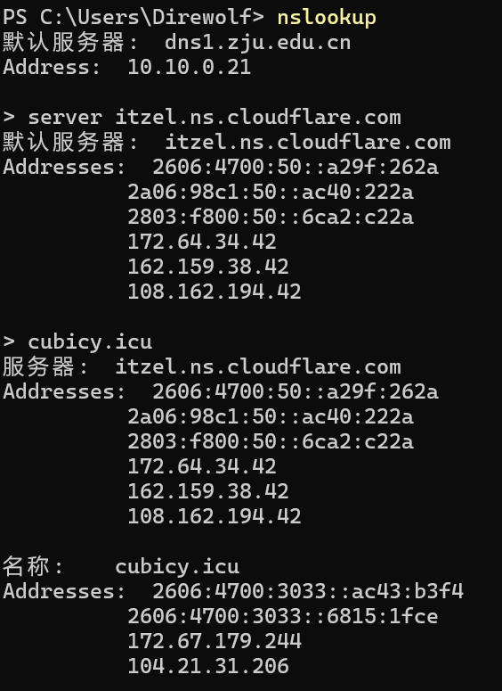
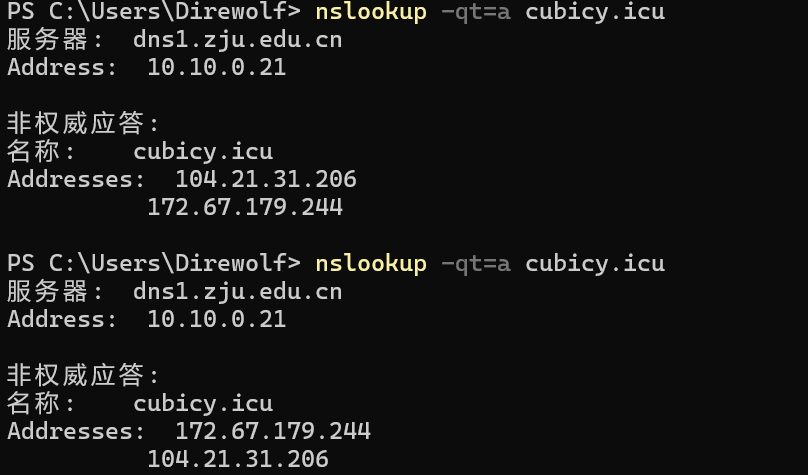
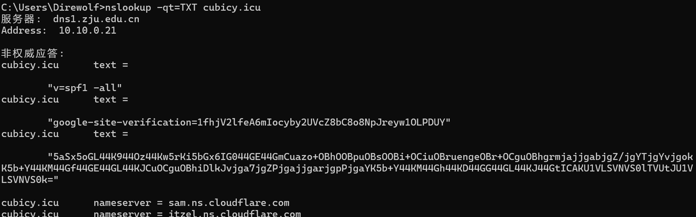
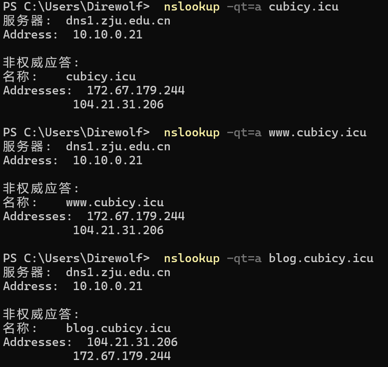
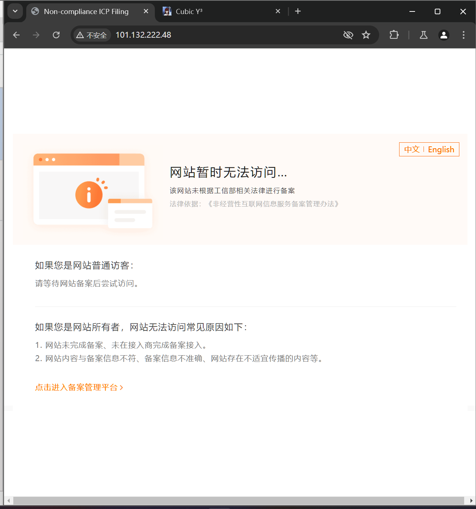
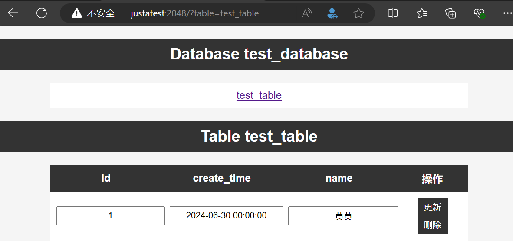
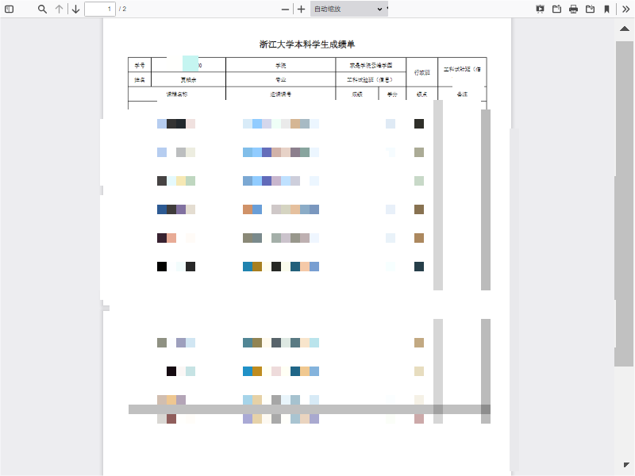
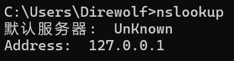
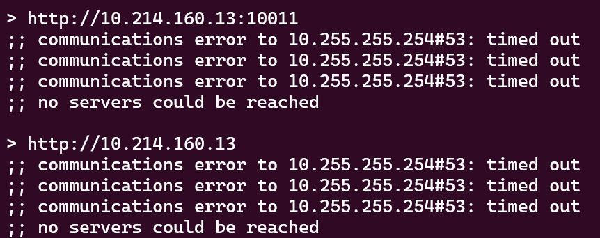

Web Lab 1¶
1. Task 1:DNS¶
1.1. DNS服务器查询与IP地址访问¶
向DNS服务器查询指定域名 cubicy.icu的地址。

- 先使用
nslookup cubicy.icu来进行查询，得到的回复是来自dns1.zju.edu.cn缓存的地址，属于非权威应答。 - 为了得到储存
cubicy.icu地址的权威域名服务器，使用nslookup -qt=ns cubicy.icu进行查询，得到两个nameserver：itzel.ns.cloudflare.com和sam.ns.cloudflare.com。 - 在命令行使用
nslookup，使用server itzel.ns.cloudflare.com修改默认服务器，然后直接输入cubicy.icu进行查询，得到地址：
| Text Only | |
|---|---|
1.2. DNS A记录查询¶
直接使用 nslookup -qt=a cubicy.icu进行多次DNS A记录查询，得到以下两种结果：

相邻两次的查询记录是不一样的，出现了 172.67.179.244和 104.21.31.206两种地址，连续查询时两者的先后顺序会不断交换。
这种现象是DNS轮询，可以实现负载均衡，将不同的用户请求分配到不同的服务器中，能够有效避免单一服务器的过载，有助于提高网站的稳定性、可用性和响应速度。
1.3. DNS记录中的隐藏文本¶
通过 nslookup -qt=TXT cubicy.icu对DNS记录中的文本进行查询，得到一段文本：

对文本进行Base64解码，得到一段文本：
失恋ソング沢山聴いて 泣いてばかりの私はもう 捨てたいから 忘れたいから もう 君のことなんて 忘れちゃうからね SUKISUKISUKISUKISUKI
据查，这是番剧《夏日重现》ed的一段歌词。
1.4. 服务提供商提供的域名特点¶
通过对 cubicy.icu、www.cubicy.icu和 blog.cubicy.icu的DNS A查询，得到其IPv4地址：

忽略顺序，三个域名的返回结果一致，这是因为网站可以拥有多个别名，可以定位到相同的IP地址。
但直接访问这些域名会弹出：Direct IP access not allowed 的提示，是无法直接访问的，说明这些地址并不是服务器的真实地址。
结合提示内容，说明服务器的内容挂载在了服务提供商的服务器上。在这个例子中，是采用了反向代理（内网穿透）的技术将内网的端口暴露到外网，此时Cloud Flare承担了请求转发的工作。
2. Task 2:HTTP¶
2.1. 使用BurpSuite抓包登录过程¶
第一行为请求行，使用GET方法请求/user/index下的数据，并且指明了使用的HTTP版本为HTTP/1.1/。
从第二行到结束都是请求头，主要包含了以下部分：一段Cookie数据，客户端的缓存机制，浏览器的相关信息（UA界面，语言，类型，版本。操作系统），以及一些控制部分：
Upgrade-Insecure-Requests: 告诉服务器客户端支持升级到更安全的连接，值1表示启用。Accept: 告诉服务器客户端能够处理的内容类型，如text/html、application/xhtml+xml等。Sec-Fetch-Site,Sec-Fetch-Mode,Sec-Fetch-User,Sec-Fetch-Dest: 一组请求头部，用于提供有关请求的上下文信息。Referer: 表示请求发起的源地址。在这里是https://zjuam.zju.edu.cn/。Accept-Encoding: 浏览器告诉服务器它支持的内容编码，这里是gzip、deflate、br。Priority: 表示请求的优先级，u=0, i表示优先级的值。Connection: 控制不同HTTP请求/响应之间的连接策略，keep-alive表示持久连接。
网页保存用户数据的方法是Cookies，在用户登录过学在浙大后就会从服务器获得一段cookie，之后每次访问都会向服务器发送这段cookie，从而让服务器识别到用户，完成自动登录之类的操作。
2.2. HTTP区分不同包的原理¶
HTTP虽然工作在无边界的TCP协议上，但是通过对数据格式和传输规则加以约束后，能够区分不同的请求和响应，如上面提到的请求行、请求头以及其组成部分都对请求的不同部分做了约束，就像是课堂上提到的摩斯电码的规范一样。如HTTP定义了一系列的方法（如GET、POST、PUT、DELETE等），以指示对资源的不同操作；请求和响应都包含头部信息，提供了关于请求或响应的元数据。
2.3. 通过IP直接访问服务器¶
尝试直接访问 cubicy.icu 的源服务器地址 101.132.222.48返回了403错误，无法直接访问。
通过对比直接访问IP和用域名访问所使用的HTTP报文，将前者的报文拦截并修改为后者的报文进行访问，得到以下情形：

猜测可能的原因是：直接域名访问的话，在做DNS解析的时候会定向到Cloud Flare的域名服务器，能够返回正确的结果。而直接IP访问时，Cloud Flare并不会对这个做域名解析，但是这个服务器只在cloudflare的cdn服务上有记录，在国内的备案平台上没有记录，因此在DNS解析失败后会自动转到备案平台，默认提示访问了一个未经备案的网站。
3. Task 3:预习¶
3.1. 了解基础知识¶
PHP、SQL：使用PHP Study配置本地运行环境。
Javascript：使用Node.js配置本地运行环境。
在了解相关知识的基础上，使用PHP Study搭建了本地服务器，并在服务器上连接了MySql进行基本的操作：

Javascript相关内容也在与浏览器开发者工具Console中得到了实践。
3.2. 用Python抓取成绩¶
已知有三个地方可以查到自己成绩：教务网（zdbk），eta，钉钉的成绩查询。在完成作业时发现只有前面两个是可以正常查询的，而且页面的数据似乎都是JavaScript动态加载的，源代码中没有成绩数据，但页面元素中有，仅使用requests库没想到该如何完成。结合自己之前的项目完成方式，决定改用Selenium库来完成。
思路：在代码内储存账号密码，向登录界面发送登录请求；完成登录后进入教务网的成绩查询页面，使用教务网自带的“打印”功能输出PDF文档。
遇到的困难：登录发送后会报错，但通过重新刷新一次能够正常登录；浏览器的安全功能禁用了自动化脚本的下载操作，即使关闭了安全功能仍旧无法下载，因此改用 save_screenshot方法来获取页面，保存到指定路径。
代码：
得到的截图示例如下：

（做了个人信息的打码处理）
4. Bonus¶
4.1. HTTP/3¶
我认为HTTP/3出现的最根本的原因就是：随着HTTP协议的不断发展，TCP协议对性能的限制因素变得越来越突出，即使是给TCP协议加上再多拓展，也还会有新的问题出现。而UDP协议相比于TCP协议来说限制更少，有更强的可拓展性，因此HTTP/3是在UDP协议的基础上重新建立一套协议，彻底解决了多次握手带来的效率低下问题和TCP顺序传输带来的头阻塞问题。
4.2. SSRF¶
DNS Rebinding的原理是通过恶意钓鱼的权威域名服务器来在第二次请求域名解析时返回一个内网地址来绕过同源策略检查，从而实现攻击内网。
基本思路是先实现一个域名服务器，第一次访问的时候返回的是正确值，第二次则返回类似于127.0.0.1的内网地址，这样就能绕过同源策略了。
在Github上找了一个脚本，在本地运行，然后用nslookup检查域名服务器，然而显示的域名服务器很奇怪： 
初步排除后发现是 Easy Connect的问题，只要我挂上学校的vpn就会变成127.0.0.1。
因此尝试使用linux来做，先后解决了端口冲突和端口权限问题之后，还是返回了一些不太理想的成果：

最终也没搞懂原因是什么。